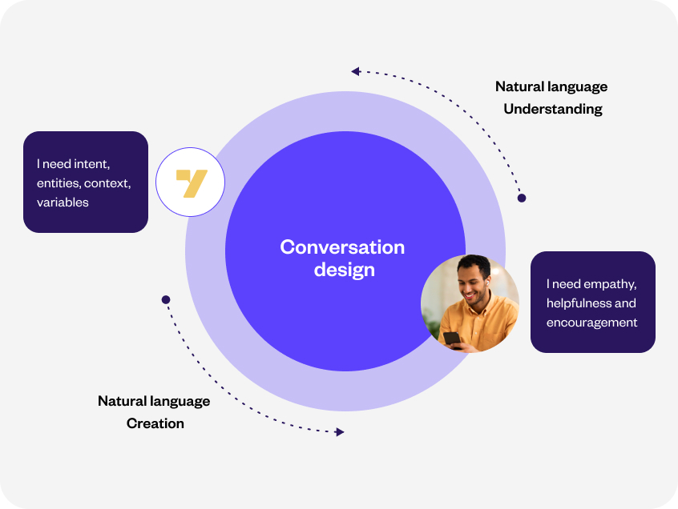
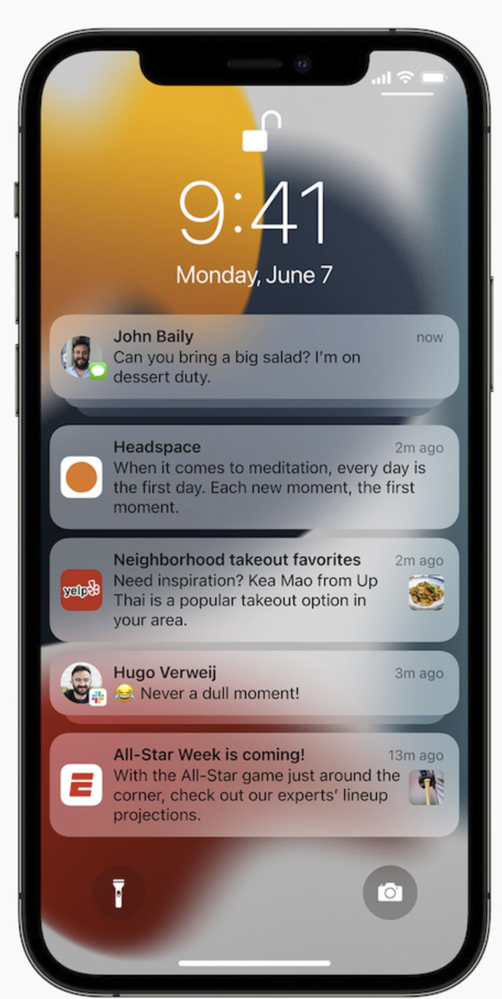
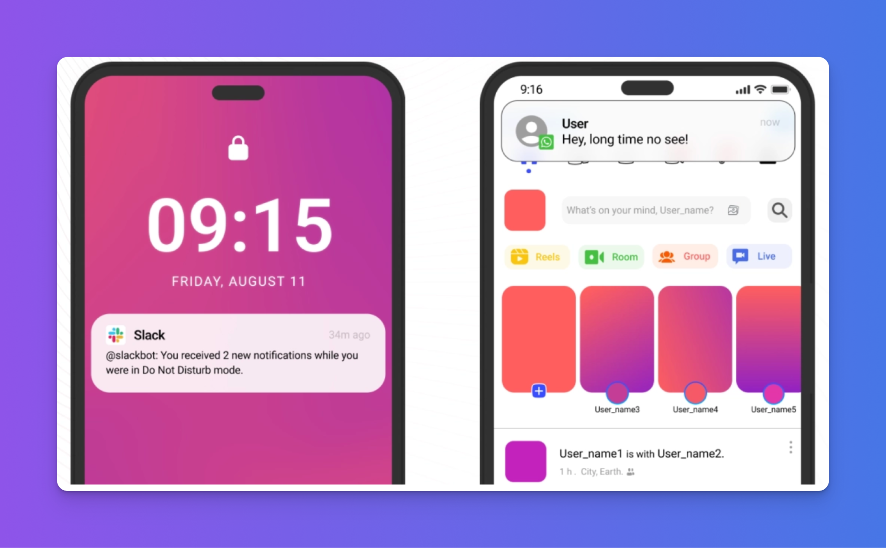
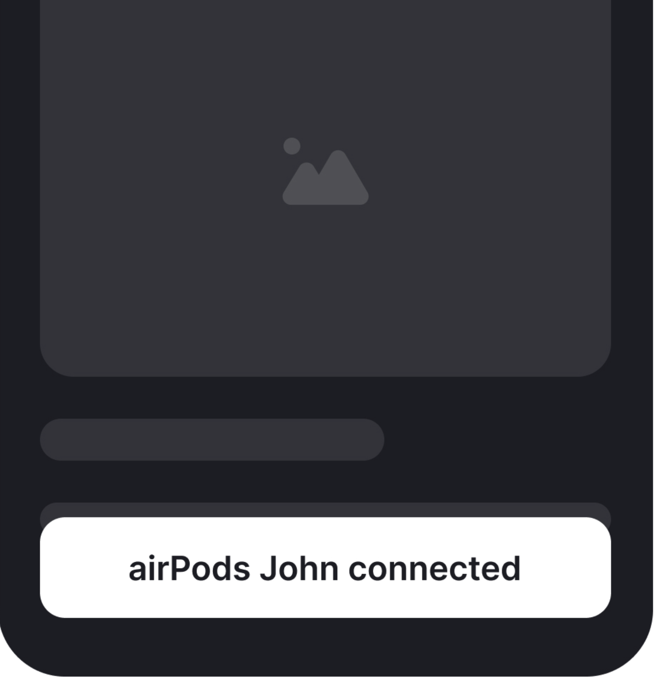
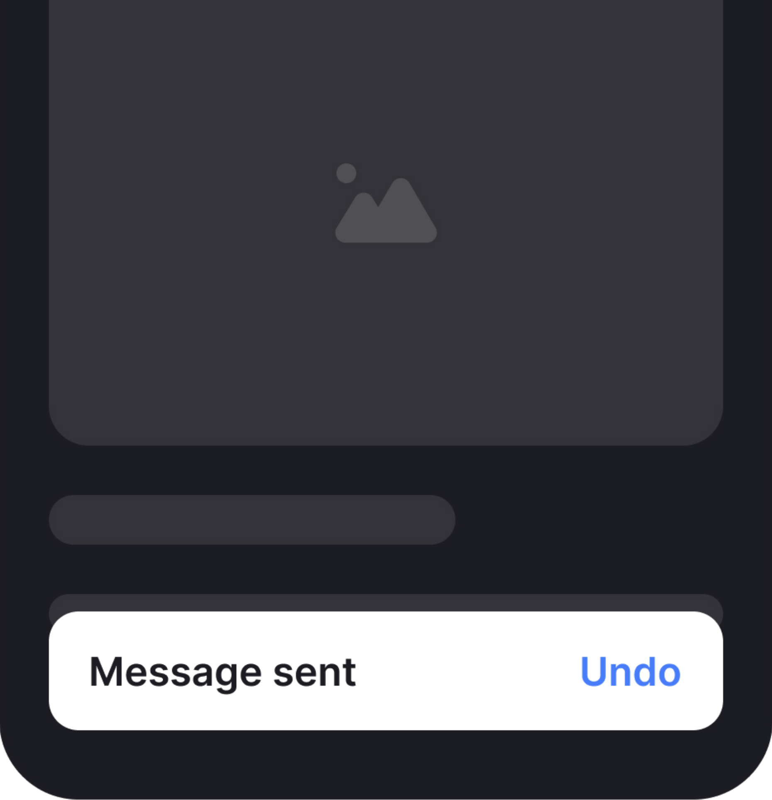
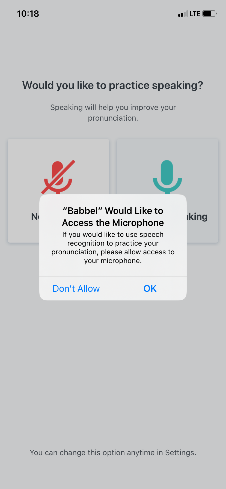
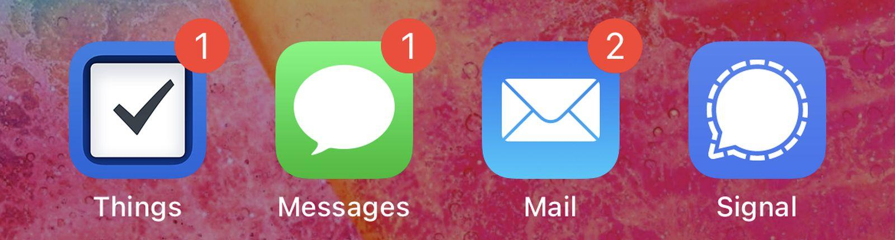
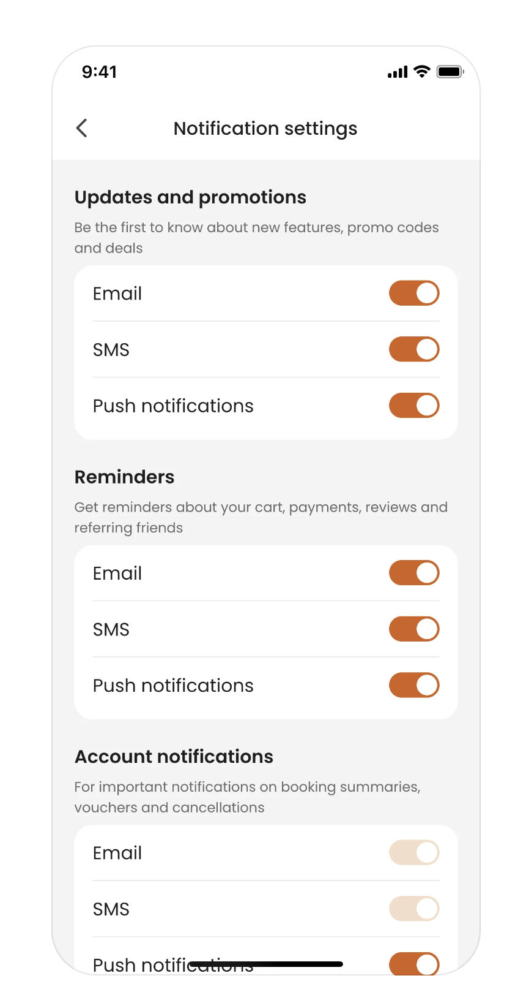

It covers everything from UI microcopy to voice assistants. Today we focus on text and verbal conversation design: the patterns that make digital interactions feel natural.
The rise of AI-powered chatbots and voice assistants demands a focus on designing user-friendly conversational interfaces to meet growing expectations for natural interactions.







Auto-dismisses in 2–4 sec. No required action. Top-right on web, bottom on iOS, bottom-center on Android.
Slides up from the bottom. Auto-dismisses in 3–4 sec. Can include one action (Undo, View). Use after reversible actions.
Blocks the entire UI with a dimmed overlay. User must respond before doing anything else. Reserve for irreversible or high-stakes decisions only.
A flood of simultaneous notifications creates high cognitive load, leading to frustration, annoyance, and notification fatigue.
Batch and pace notifications strategically. The right cadence feels helpful; the wrong one gets you uninstalled.
